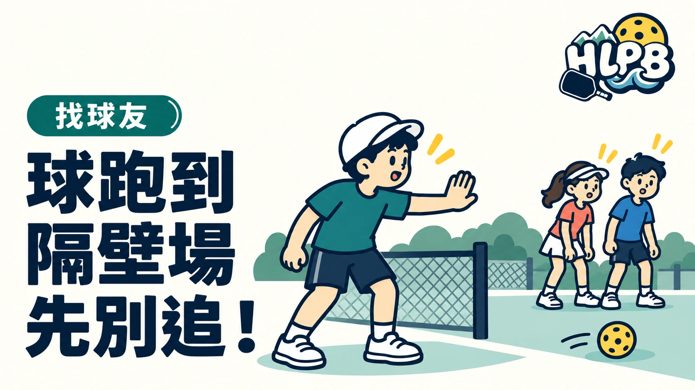

球跑到隔壁場，先處理對方的安全，再處理自己的撿球。直接穿越正在對打的球場，可能使正在看球的人來不及注意地面或移動中的人。
提醒與撿球，分成兩個動作
| 當下要做的事 | 溝通重點 |
|---|---|
| 球可能造成踩踏或絆倒 | 立即清楚提醒球進場 |
| 準備進入別人的球場 | 先等對方知道並停止對打 |
| 請人協助取球 | 說明球的位置，避免多人一起衝進去 |
| 準備把球還回去 | 確認對方留意，不隨手丟入對打動線 |
提醒危險與自行宣布別人的比賽結果，是不同的事。你可以清楚告知有球進場，但是否依規則重打或作其他處理，仍由該場球員及裁判依情形判斷。
為什麼不只是禮貌問題？
球員的注意力通常跟著來球走，未必會看到腳邊的另一顆球。撿球者也可能只看地面，忽略鄰場揮拍及退步的人；先讓對方知道，比動作快更重要。
人多的球場可以先約好什麼？
HLPB 建議同場球友約定簡單一致的提醒用語，並把備用球與球袋放在不影響移動的位置。輪到別人打球時，取球、走動與交談都應注意對方的回合節奏。
本文是球場互動建議；妨礙及重打的正式判定，另依適用規則處理。
內容更新：2026-10-20｜資料來源：USA Pickleball 官方資料；USA Pickleball 官方資料
返回文章列表